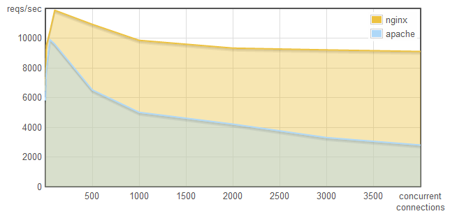

PHP & Server HTTP Apache
Mari kita lihat contoh berikut yaitu operasi fungsi akses ke database MySQL oleh PHP yang dilakukan secara sinkron
$hasil = mysql_query("SELECT * FROM TabelAnggota");
print_r($hasil);
pengambilan data oleh mysql_query() diatas akan dijalankan dan operasi berikutnya print_r() akan diblok atau tidak akan berjalan sebelum akses ke database selesai. Yang perlu menjadi perhatian disini yaitu proses Input Output atau I/O akses ke database oleh mysql_query() dapat memakan waktu yang relatif mungkin beberapa detik atau menit tergantung dari waktu latensi dari I/O. Waktu latensi ini tergantung dari banyak hal seperti
- Query database lambat akibat banyak pengguna yang mengakses
- Kualitas jaringan untuk akses ke database jelek
- Proses baca tulis ke disk komputer database yang membutuhkan waktu
- ...
Sebelum proses I/O selesai maka selama beberapa detik atau menit tersebut state dari proses mysql_query() bisa dibilang idle atau tidak melakukan apa-apa.
Lalu jika proses I/O di blok bagaimana jika ada request lagi dari user ? apa yang akan dilakukan oleh server untuk menangani request ini ?..penyelesaiannya yaitu dengan memakai pendekatan proses multithread. Melalui pendekatan ini tiap koneksi yang terjadi akan ditangani oleh thread. Thread disini bisa dikatakan sebagai task yang dijalankan oleh prosesor komputer.
Sepertinya permasalahan I/O yang terblok terselesaikan dengan pendekatan metode ini tetapi dengan bertambahnya koneksi yang terjadi maka thread akan semakin banyak sehingga prosesor akan semakin terbebani, belum lagi untuk switching antar thread menyebabkan konsumsi memory (RAM) komputer yang cukup besar.
Berikut contoh benchmark antara web server Apache dan Nginx (server HTTP seperti halnya Apache hanya saja Nginx memakai sistem asinkron I/O dan event yang mirip Node.js). Gambar ini diambil dari goo.gl/pvLL4

Bisa dilihat bahwa Nginx bisa menangani request yang jauh lebih banyak daripada web server Apache pada jumlah koneksi bersama yang semakin naik.